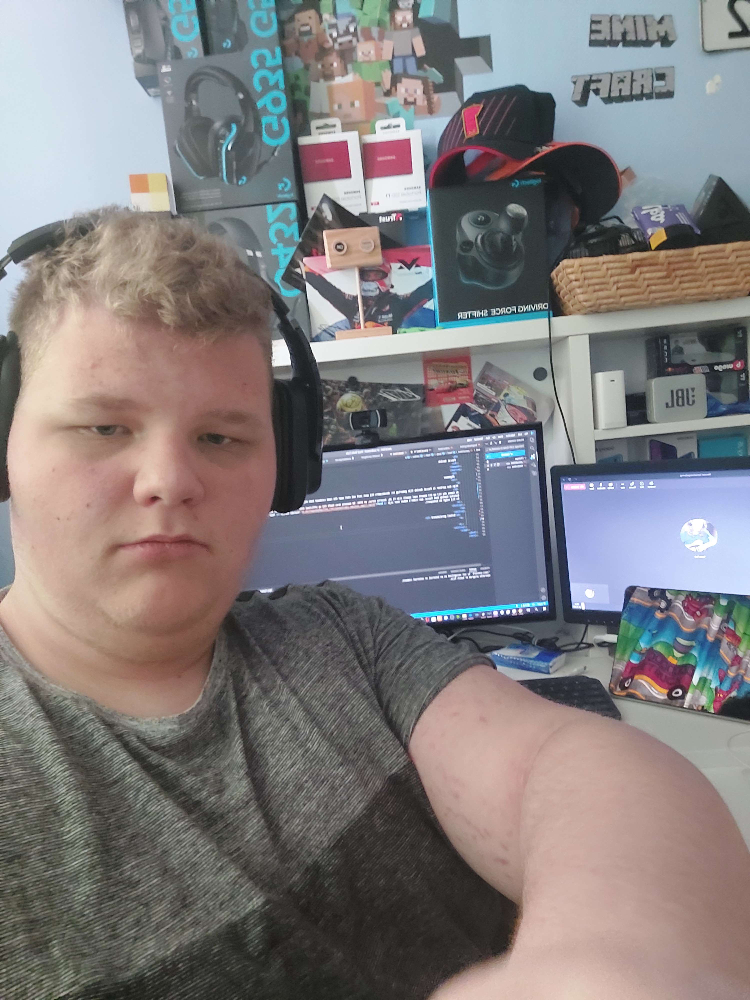

welkom op de hoofdpagina
ouderavond
Op deze ouderavond ga ik u laten zien met wie ik deze periode heb
samenen gewerkt,
en hoe dat in zijn gang ging.
Code
Deze website is volledig gemaakt in Html, en css.
in de presentatie later op deze avond word er een kleine demo gegeven.
Foto's Tiësto
Foto's:
Foto's Pascal
Foto's:
